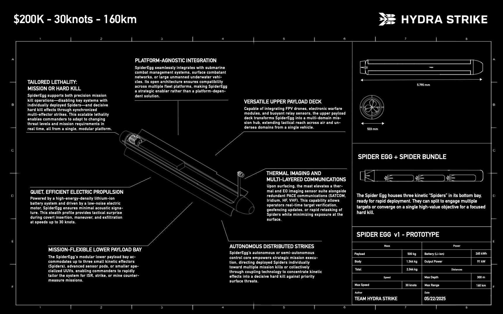
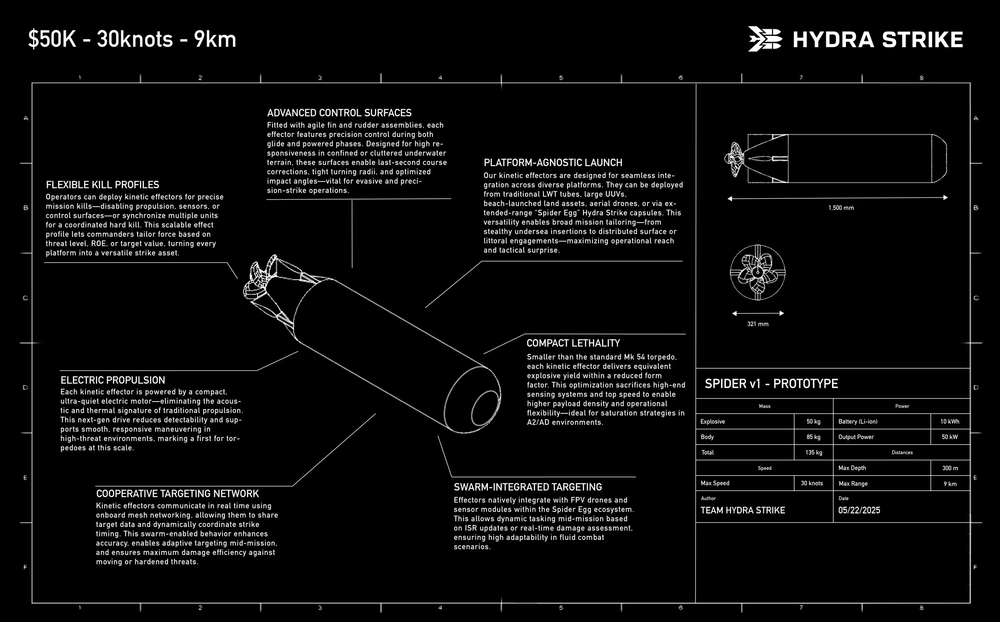

Submarines run out of torpedoes long before they run out of targets. As Team Hydra Strike in Stanford's Hacking for Defense, sponsored by the Naval Undersea Warfare Center (NUWC) Newport, we set out to help the Navy "Sink Smarter, Not Harder." The result is Spider Egg: a modular, autonomous UUV that launches from existing submarine torpedo tubes and carries mission-specific payloads, including kinetic "Spiders," FPV drones, sensors, and EW and relay modules. One tube becomes many effects. We took it from a classroom problem statement to a working prototype, outside funding, connections with the Office of Naval Research, and briefings with Navy leadership and Congress.
NUWC Newport brought our team a blunt challenge: the Navy's undersea strike capacity still relies on the Mk 48 heavyweight torpedo, one weapon for one target. Our research found that a submarine can carry only about 25 torpedoes before it needs a 3–4 day resupply. In a high-tempo conflict, that magazine depth is a strategic liability.
Spider Egg is a torpedo-sized, modular UUV that fits existing submarine tubes and acts as a carrier rather than a single warhead. Near the target it releases smaller kinetic effectors (the "Spiders") for precise mission kills or coordinated hard kills. It can also launch FPV drones, surface a thermal/EO and comms mast, or deploy sensors and relays. Because the architecture is open and platform-agnostic, the same vehicle works with submarines, surface combatants, and large UUVs.
Spider Egg began in Stanford's Hacking for Defense in Spring 2025, where Team Hydra Strike took on NUWC Newport's problem and ran 110+ stakeholder interviews in a single quarter, including Navy commanders and submarine weapons officers. Through the Defense Innovation Unit's Commercialization Fellowship, we then built and tested a 6-foot autonomous UUV prototype in under 8 weeks with just two engineers, secured $80K in non-dilutive funding, and took discovery to 155+ interviews across the DoD.
Each Spider is a compact kinetic effector: 1.5 m long, with quiet electric propulsion, agile fin and rudder control surfaces, and onboard mesh networking for cooperative targeting. It is smaller than a standard Mk 54 torpedo yet built to deliver comparable effects, and it can launch from LWT tubes, large UUVs, beach-launched assets, aerial drones, or a Spider Egg capsule.

